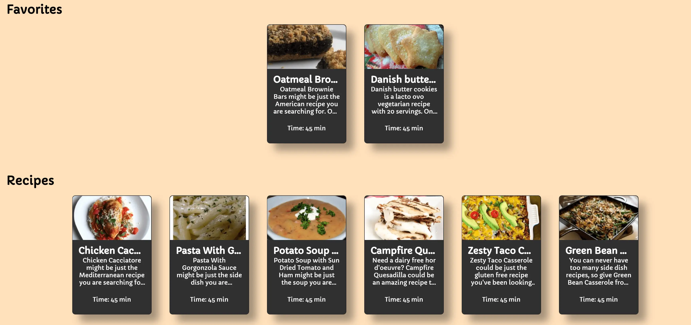
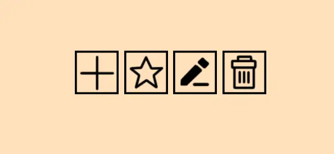
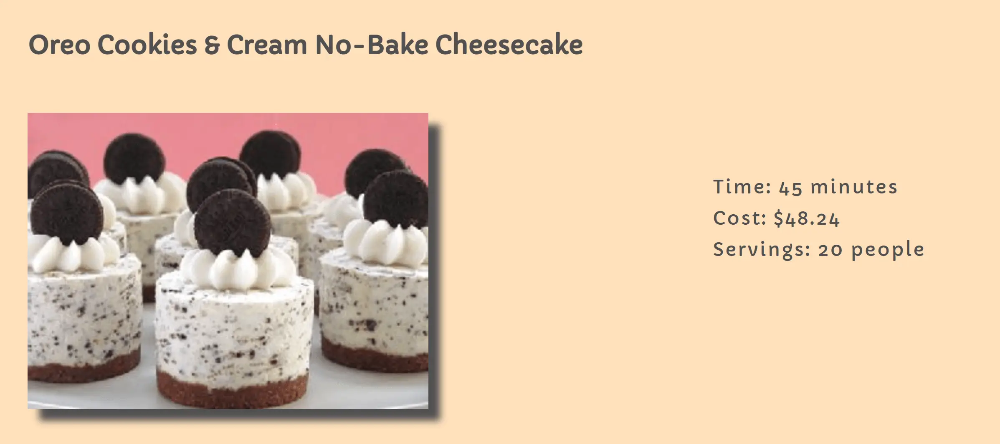
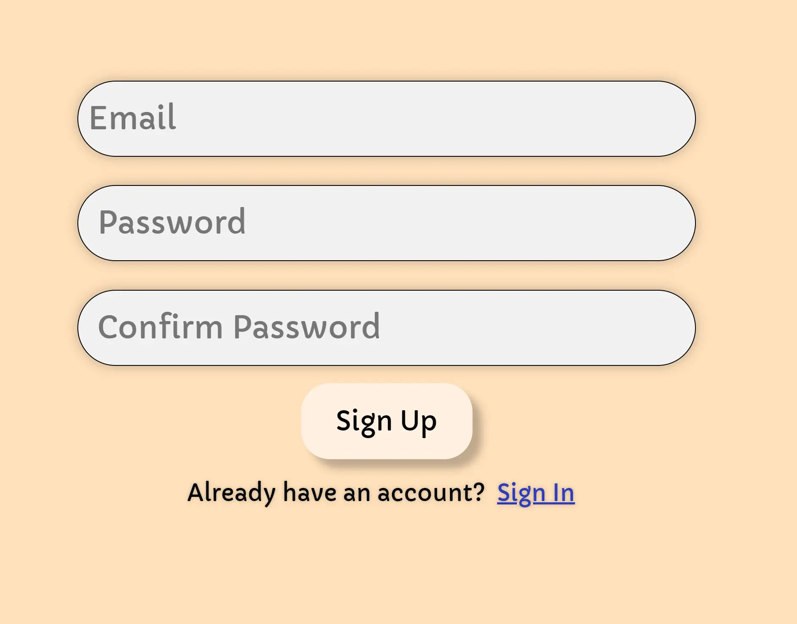
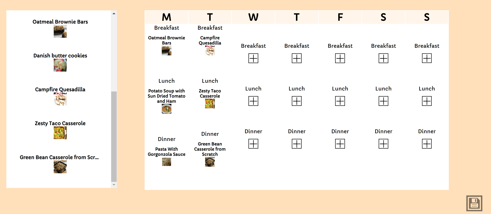

During fall quarter 2021 at UCSD, I took a Software Engineering class, CSE 110. The purpose of this class is
to show students the software engineering process by completing a project from start to finish. This project
was completed amongst a group of 10-12 people over the course of 10 weeks. My group created a web
application called Easy Chef. I was apart of the front end team. My primary roles were to create and style
the pages, connect the front and back end, and help with a few of the backend features.
App Description
Easy Chef is a CRUD application that provides recipes for users. It is easy to use and a great application
for those who are new to cooking and/or are looking for quick and simple recipes.
Features
1. The ability to search recipes that can be filtered by dietary restrictions, allergies, amount of
time, and cost
2. Having a personal cookbook page that allows users to include recipes of meals that they like

3. The ability for users to modify, favorite, or add recipes to save in their personal cookbook

4. A recipe page per meal that includes nutrition facts, ingredients, directions, amount of time it
takes to prepare the dish 
5. Login and signup system with an email and password 
6. The ability to create a meal plan in which user’s can drag in meals from the personal cookbook
page
to each day of the week 